|
Linear mixed models (with Dr. Elizabeth Pankratz) |
Regression refresher, intro to group-structured data |
| Modelling group-structured data using random effects | |
| Interpreting LMMs and building maximal models | |
| Troubleshooting model fit, checking assumptions + diagnostics | |
| LMMs: Practice analysis | |
|
factor analysis working with multi-item measures (with Dr. Josiah King) |
measurement and dimensionality |
| exploring underlying constructs (EFA) | |
| testing theoretical models (CFA) | |
| reliability and validity | |
| recap & exam prep |
Interpreting LMMs and
building maximal models
Data Analysis for Psychology in R 3
Elizabeth Pankratz (elizabeth.pankratz@ed.ac.uk)
Department of Psychology
University of Edinburgh
2026–2027
Course Overview
This week’s learning objectives
How do we interpret the random effects part of a model summary?
How do we know if a model can include random intercepts for a given grouping variable?
How do we know if a model can include random slopes over a given predictor for a given grouping variable?
What is a maximal model?
Recap: Linear mixed models (LMMs)
The data: Log reaction times in the
Implicit Association Test (IAT)

# A tibble: 12 x 4
ppt_id item_id pairing logRT
<chr> <chr> <fct> <dbl>
1 ppt1 item1 Associated 4.33
2 ppt1 item1 Unassociated 4.70
3 ppt2 item1 Associated 4.17
4 ppt2 item1 Unassociated 4.91
5 ppt3 item1 Associated 4.45
6 ppt3 item1 Unassociated 5.13
7 ppt4 item1 Associated 4.41
8 ppt4 item1 Unassociated 6.54
9 ppt5 item1 Associated 5.19
10 ppt5 item1 Unassociated 6.64
11 ppt6 item1 Associated 4.74
12 ppt6 item1 Unassociated 5.96Why is a simple linear model not appropriate for this data?
Modelling this data with an LMM
library(lme4)
implicit_full_lmm <- lmer( # LMMs use lme4::lmer(), not lm()
logRT ~ pairing + # fixed effects: predict logRT by pairing
# (0 = Unassociated, 1 = Associated)
# random effects:
(1 + pairing | ppt_id) + # for each ppt, adjust the intercept and the slope
(1 + pairing | item_id), # for each item, adjust the intercept and the slope
data = implicit_data
)What does it mean to “adjust the intercept”?
The average association between logRT and pairing (the line defined by the fixed intercept and fixed slope):
If a participant or an item has a higher log RT than average, then they will have a positive adjustment to the fixed intercept.
If a participant or an item has a lower log RT than average, then they will have a negative adjustment to the fixed intercept.
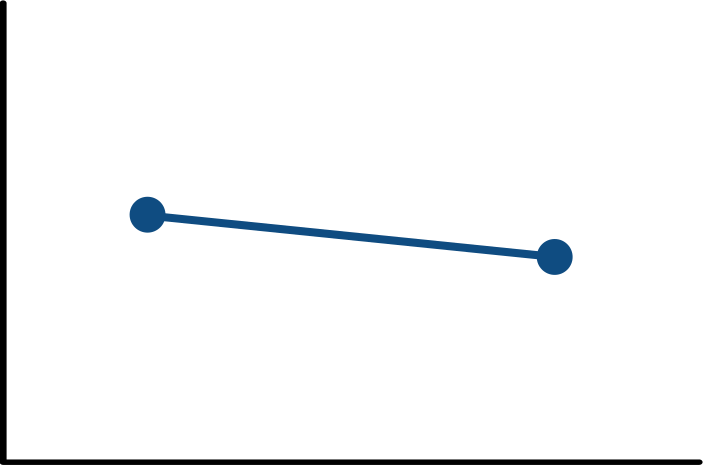
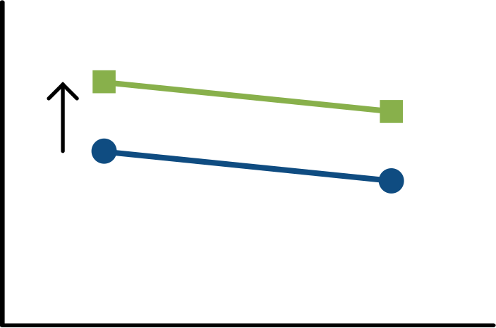
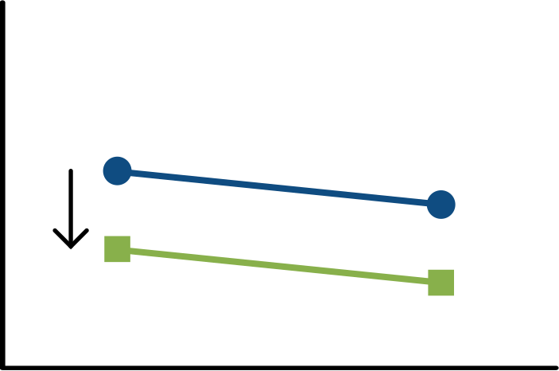
When the model includes random intercepts by ppt_id and by item_id, it will estimate how much the fixed intercept should be nudged up or down, in order to better fit the data from each participant and each item.
What does it mean to “adjust the slope”?
The average association between logRT and pairing (the line defined by the fixed intercept and fixed slope):
If a participant or an item has a more positive effect of pairing than average, then they will have a positive adjustment to the fixed slope over pairing.
If a participant or an item has a more negative effect of pairing than average, then they will have a negative adjustment to the fixed slope over pairing.
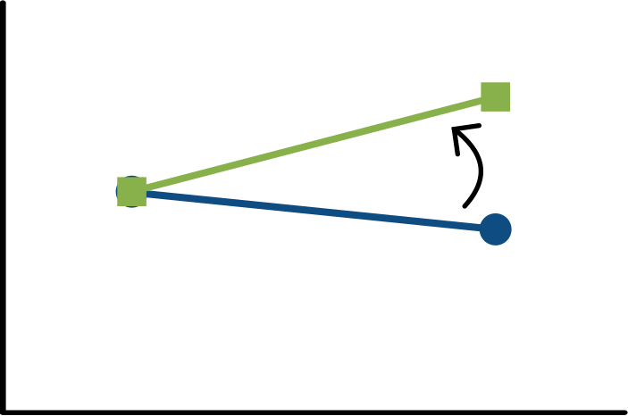
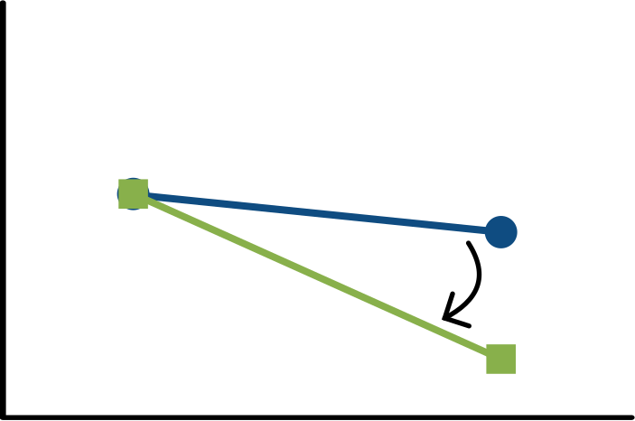
When the model includes random intercepts by ppt_id and by item_id as well as random slopes over pairing by ppt_id and by item_id, it will
- estimate how much the fixed intercept should be nudged up or down (last slide) AND ALSO
- how much the fixed slope should be swung up or down (this slide)
in order to better fit the data from each participant and each item.
Interpreting LMM summaries
The full summary
Linear mixed model fit by REML ['lmerMod']
Formula: logRT ~ pairing + (1 + pairing | ppt_id) + (1 + pairing | item_id)
Data: implicit_data
REML criterion at convergence: 10722
Scaled residuals:
Min 1Q Median 3Q Max
-3.765 -0.669 -0.005 0.666 3.401
Random effects:
Groups Name Variance Std.Dev. Corr
ppt_id (Intercept) 0.6068 0.779
pairingAssociated 0.0986 0.314 -0.83
item_id (Intercept) 0.7759 0.881
pairingAssociated 0.1508 0.388 -0.77
Residual 0.2730 0.522
Number of obs: 6400, groups: ppt_id, 100; item_id, 32
Fixed effects:
Estimate Std. Error t value
(Intercept) 4.7713 0.1744 27.37
pairingAssociated -0.7624 0.0766 -9.95
Correlation of Fixed Effects:
(Intr)
parngAssctd -0.776Start with the fixed effects
Fixed effects:
Estimate Std. Error t value
(Intercept) 4.7713 0.1744 27.37
pairingAssociated -0.7624 0.0766 -9.95Interpret the fixed effects the same way you interpret coefficients in a simple linear model.
(Intercept) = the estimated mean outcome when all predictors are equal to zero.
- The estimated mean log reaction time when the topic pairing is unassociated (the reference level, coded as 0) is 4.77 log units.
pairingAssociated = the estimated increase/decrease in the outcome when the predictor moves from 0 to 1.
- The log reaction time for associated pairings is estimated to be 0.76 log units smaller than the log reaction time for unassociated pairings.
Where are the p-values?
Where are the p-values?
The mathematics that make the random effects work (which you do not need to know!) means that we can’t easily translate t-values to p-values. But clever people have come up with good approximations!
Add the approximated p-values into the model summary by
- loading the library
lmerTest, and - re-fitting the LMM using
lmer().
This gives you p-values estimated using “Satterthwaite’s method”.
...
Fixed effects:
Estimate Std. Error df t value Pr(>|t|)
(Intercept) 4.7713 0.1744 47.4387 27.37 < 2e-16 ***
pairingAssociated -0.7624 0.0766 44.0019 -9.95 7.8e-13 ***
...Fixed effects, now with p-values
Fixed effects:
Estimate Std. Error df t value Pr(>|t|)
(Intercept) 4.7713 0.1744 47.4387 27.37 < 2e-16 ***
pairingAssociated -0.7624 0.0766 44.0019 -9.95 7.8e-13 ***(Intercept):
- The estimated mean log reaction time when the topic pairing is unassociated (the reference level, coded as 0) is 4.77 log units.
- This estimate is significantly different from zero at \(p\) < .001, but that’s not really a surprise … we were already pretty sure that the average log RT would be different from zero!
- When the outcome variable is continuous, we typically don’t report p-values for intercepts, because it’s not a very interesting hypothesis test
pairingAssociated:
- The log reaction time for associated pairings is estimated to be 0.76 log units smaller than the log reaction time for unassociated pairings.
- This estimate is significantly different from zero (\(p\) < .001).
- This is an interesting hypothesis test, because it looks at the difference between conditions, which is the whole point of our experiment
Next, look at the random effects
Random effects:
Groups Name Variance Std.Dev. Corr
ppt_id (Intercept) 0.6068 0.779
pairingAssociated 0.0986 0.314 -0.83
item_id (Intercept) 0.7759 0.881
pairingAssociated 0.1508 0.388 -0.77
Residual 0.2730 0.522
Number of obs: 6400, groups: ppt_id, 100; item_id, 32
First: Sense check the quantities in the final line.
- Is the number of observations (6400) correct?
- Is the number of distinct levels of
ppt_id(100) correct? - Is the number of distinct levels of
item_id(32) correct?
If not, the data is probably not formatted correctly. Do any fixes you need.
Then: Look at the rest of the output. Read it row by row as a table, like this:
Intercept adjustments for each ppt_id (1)
Groups Name Variance Std.Dev. Corr
ppt_id (Intercept) 0.6068 0.779 What this line tells us: The (Intercept) adjustments for ppt_id have a standard deviation (SD) of 0.78 log units.
- The variance is just the SD squared (0.779\(^2\) = 0.607) so it doesn’t add any useful information.
- We will always just focus on the SD.
The number 0.78 doesn’t mean much on its own. We must interpret it with respect to the value that it is adjusting: the fixed intercept of 4.77 log units.
By combining these numbers, we find the estimated distribution of participant-level intercepts.
This is useful because it helps us understand the variability in participant behaviour in our experiment.
Intercept adjustments for each ppt_id (2)
Groups Name Variance Std.Dev. Corr
ppt_id (Intercept) 0.6068 0.779 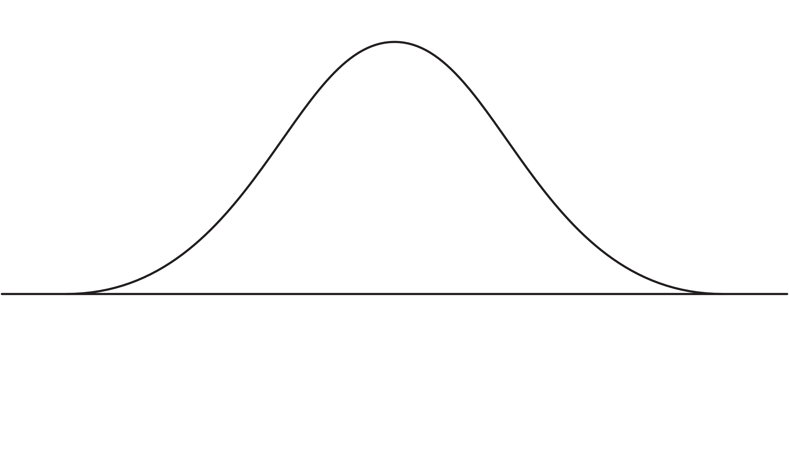
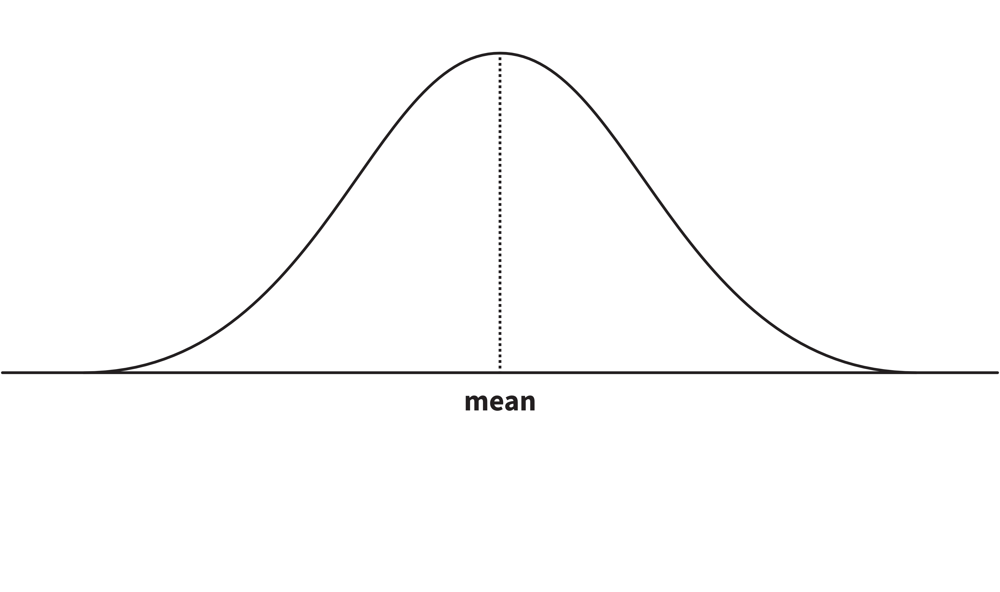
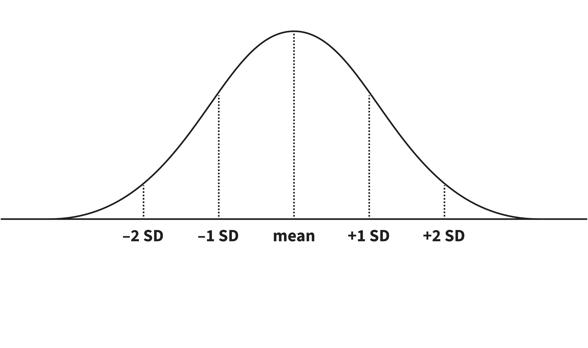
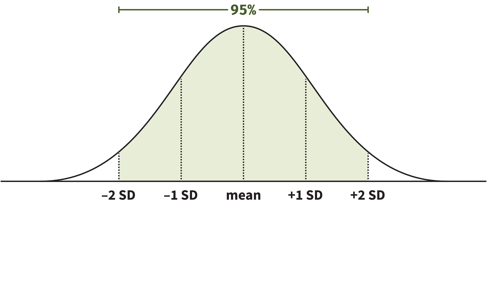
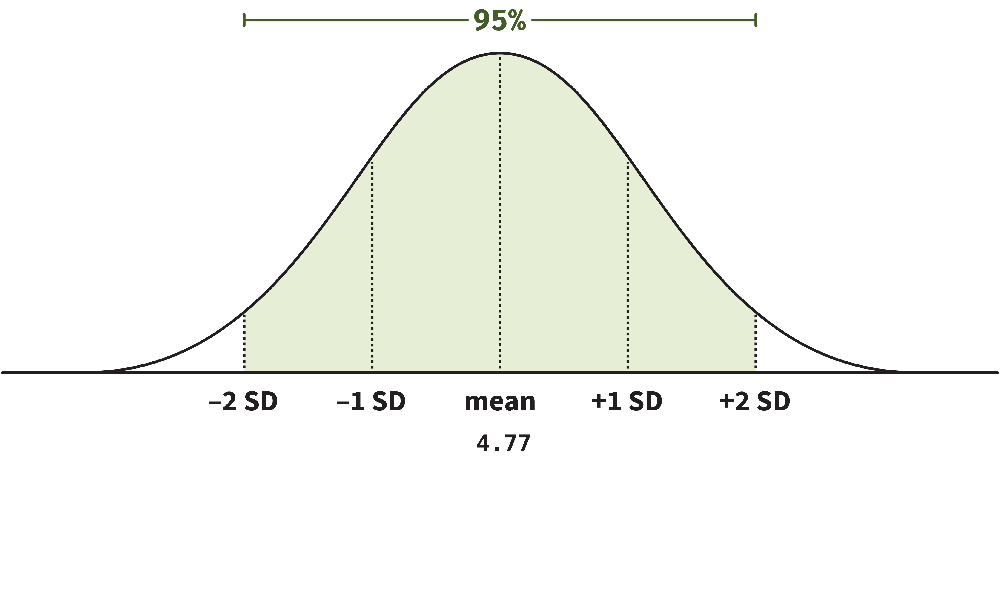
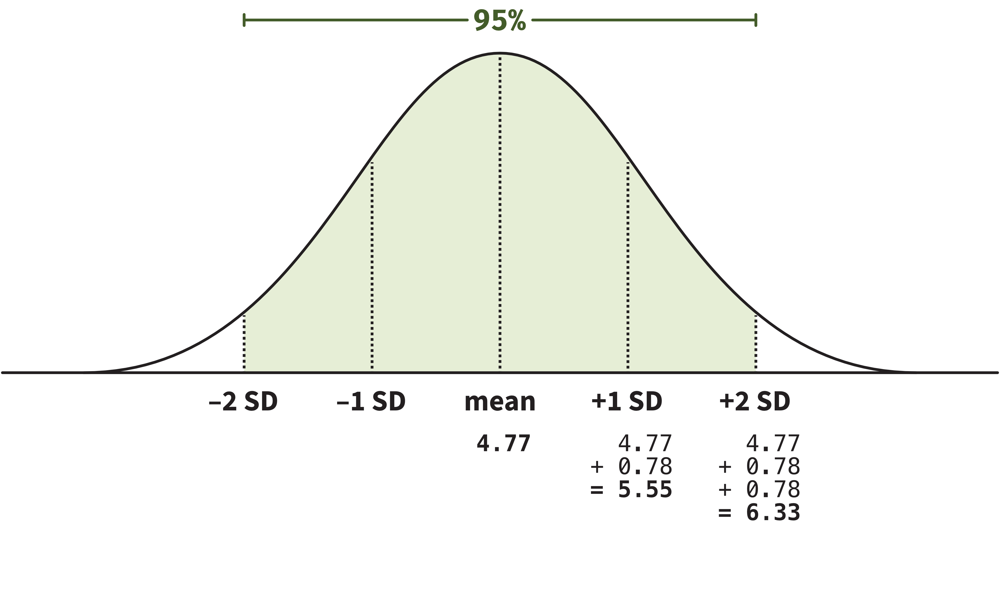
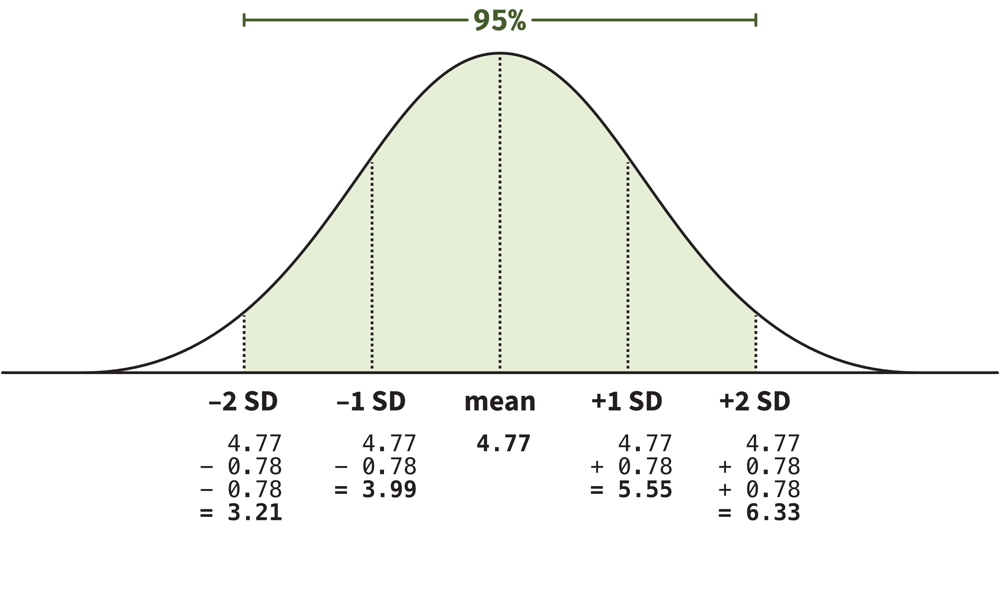
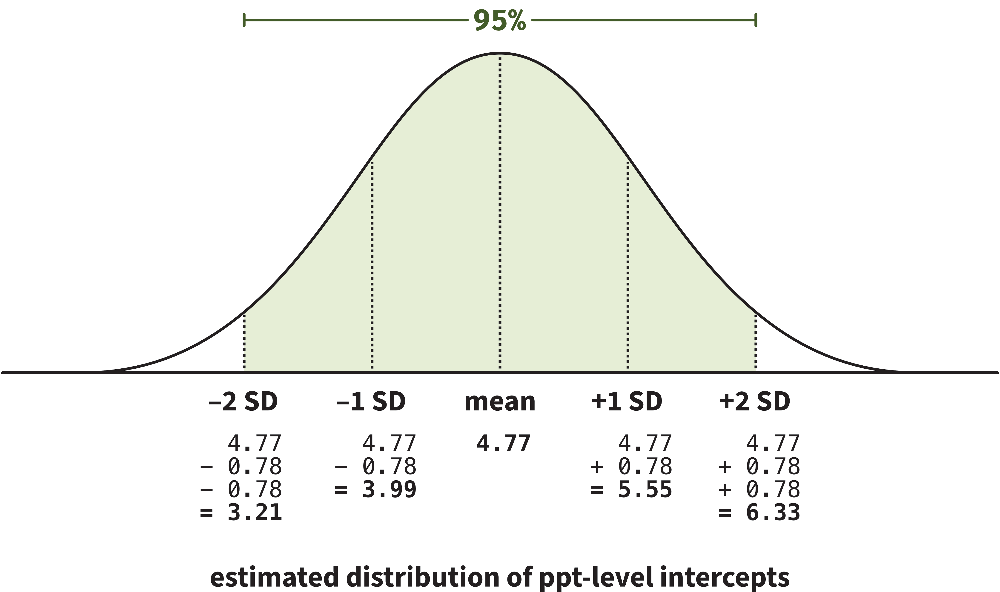
Intercept adjustments for each ppt_id (3)
Approx 95% of participant-level intercepts are estimated to fall between about 3.21 log units and 6.33 log units.
This means that, for 95% of participants, the estimated log RT for unassociated pairings is between 3.21 log units and 6.33 log units.
Useful information to report!
pairingAssociated adjustments by ppt_id
Groups Name Variance Std.Dev. Corr
ppt_id (Intercept) 0.6068 0.779
pairingAssociated 0.0986 0.314 -0.83The pairingAssociated adjustments (i.e., adjustments to the slope over pairing) for ppt_id have a SD of 0.31 log units.
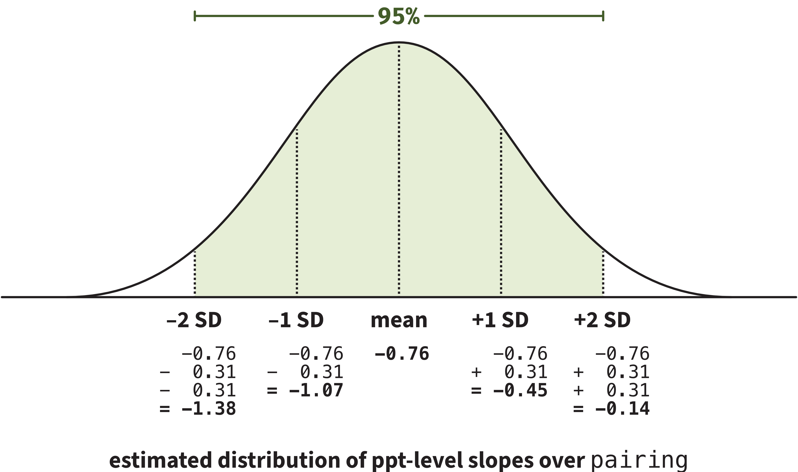
At least 95% of participants are estimated to have a negative effect of pairing: faster RTs for associated pairings compared to unassociated pairings.
Correlation between by-participant slope and intercept adjustments
Groups Name Variance Std.Dev. Corr
ppt_id (Intercept) 0.6068 0.779
pairingAssociated 0.0986 0.314 -0.83The participant-level (Intercept) and pairingAssociated adjustments have a correlation of –0.83.
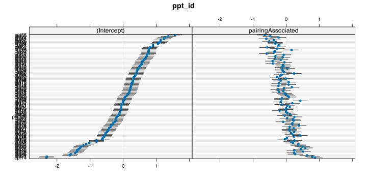
Over to you for interpreting item_id adjustments
Intercept adjustments for each item_id
Groups Name Variance Std.Dev. Corr item_id (Intercept) 0.7759 0.881 Calculate the range in which the 95% of item-level intercepts are estimated to fall.
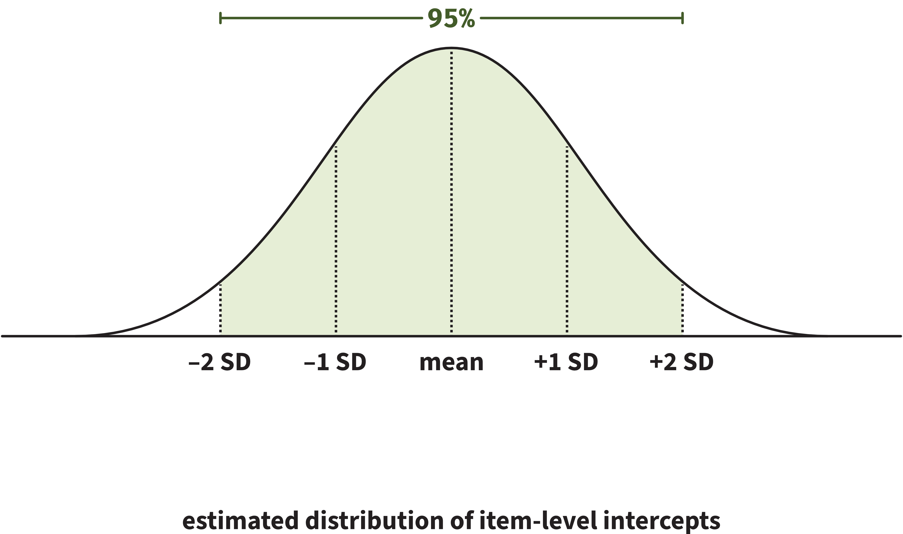
pairingAssociated adjustments for item_id
Groups Name Variance Std.Dev. Corr item_id (Intercept) 0.7759 0.881
pairingAssociated 0.1508 0.388 -0.77Calculate the range in which the 95% of item-level slopes over pairing are estimated to fall.
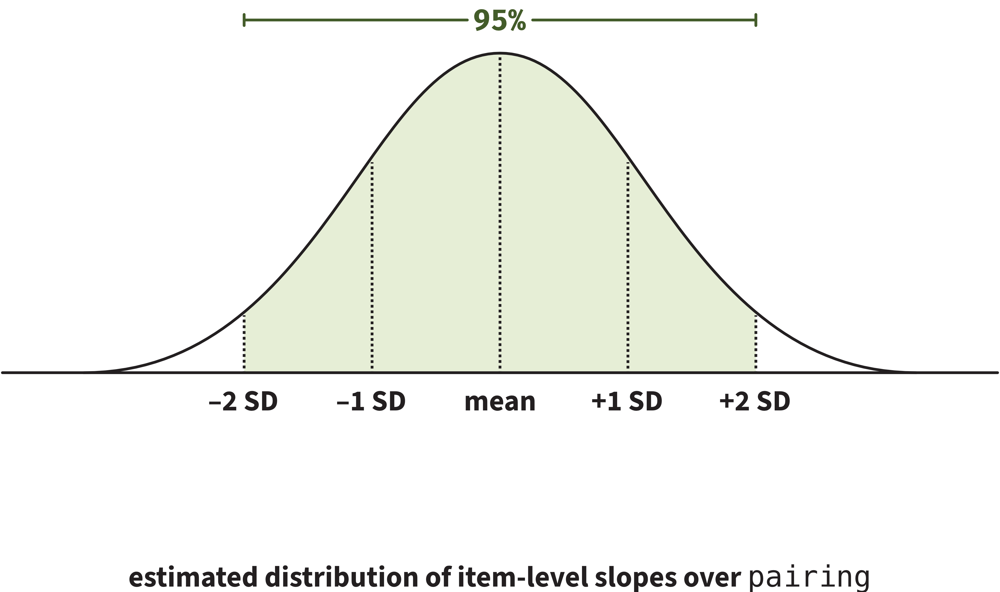
Correlation between by-item intercept and slope adjustments
Groups Name Variance Std.Dev. Corr item_id (Intercept) 0.7759 0.881
pairingAssociated 0.1508 0.388 -0.77The item-level (Intercept) and pairingAssociated adjustments have a correlation of –0.77.
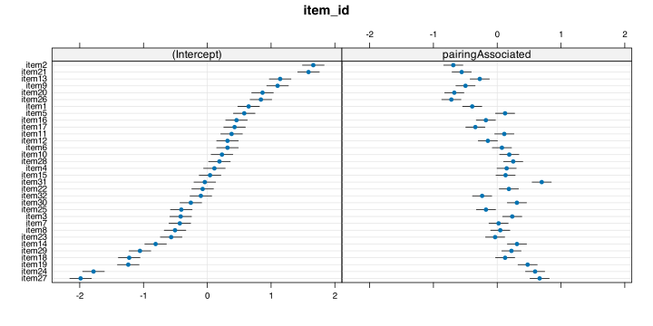
Residuals
Groups Name Variance Std.Dev. Corr Residual 0.2730 0.522 A residual is the difference between the value we observed for a data point and the value that the model predicts for it.
Residuals are how the model deals with the unsystematic leftover variability that is present in the world but not accounted for by variables we’ve included in the model.
Residual variance/SD is not very informative or useful. You don’t need to interpret or report it.
One last thing to report:
Plots of model-fitted values
Use Effect() to compute model-fitted values
In the library effects, there is a function called Effect().
It gives us the outcome values that the model would estimate/predict for each level of our predictor, as well as the 95% CI around those values. (Same idea as emmeans from DAPR2.)
pairing fit se lower upper
1 Unassociated 4.77 0.174 4.43 5.11
2 Associated 4.01 0.125 3.76 4.25fit: the estimated outcome (log RT) value for each level ofpairingse: the standard error of that estimatelower: the lower bound of the estimate’s 95% CIupper: the upper bound of the estimate’s 95% CI
Visualise these estimates
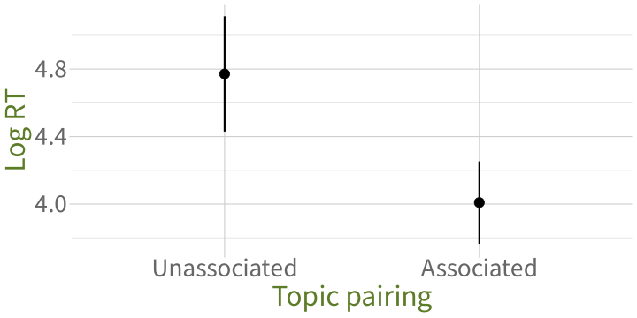
How to identify all possible random effects
How to identify all possible random effects
Four steps that you can apply to any dataset + RQ:
- Use your RQ to figure out what your model’s outcome and predictors are (i.e., your model’s fixed effects).
- For all variables that are not the outcome or predictors, identify whether they are grouping variables.
- Identify which of those grouping variables contribute random / non-manipulated / non-controlled variability to your data (think about the data generating process).
For every randomly-varying grouping variable, your model must contain a random intercept for that grouping variable.
- Refer back to all predictors you identified in Step 1. For each randomly-varying grouping variable, check whether at least some of its levels appear with more than one value of each predictor (i.e., whether the predictor varies within each level of the grouping variable).
If they do, then (in addition to the random intercepts) your model can also contain a random slope over that predictor for that grouping variable.
If they don’t, then a random slope over that predictor is impossible.
Example 1: Hesitation markers and believability
Example 1: Hesitation markers and believability
RQ: Do hesitation markers like “um”/“erm” affect how believable true statements seem?
Examples from condition hesitation = No:
- “A hashtag is technically called an octothorp.”
- “The largest snowflake was bigger than most pizzas.”
- “Pigs don’t sweat.”
Examples from condition hesitation = Yes:
- “Erm … a hashtag is technically called an octothorp.”
- “Erm … the largest snowflake was bigger than most pizzas.”
- “Erm … pigs don’t sweat.”
Code
belief_data |>
ggplot(aes(x = hesitation, y = belief, colour = hesitation, fill = hesitation)) +
geom_violin(alpha = 0.5) +
geom_jitter(alpha = 0.5, size = 3) +
stat_summary(geom = 'point', fun = mean, colour = 'black', size = 5) +
scale_fill_manual(values = pal) +
scale_colour_manual(values = pal) +
theme(
legend.position = 'none'
)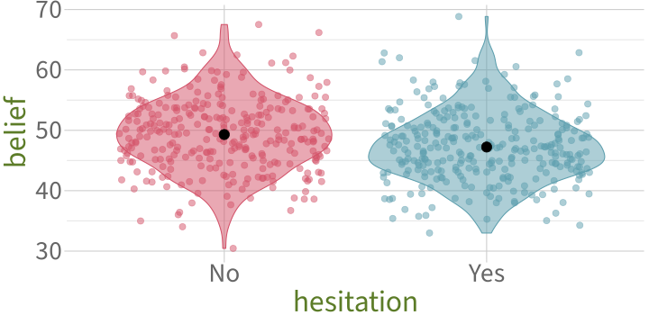
The data
# A tibble: 20 x 5
ppt sentence statement hesitation belief
<chr> <dbl> <chr> <fct> <dbl>
1 ppt_1 1 Candy floss was invented by a dentist Yes 53.2
2 ppt_1 2 The first speeding fine was given in 1896 Yes 44.7
3 ppt_1 3 Honey doesn't go off Yes 46.9
4 ppt_1 4 A dog was voted mayor of a town in Minnesot~ Yes 50.8
5 ppt_1 5 The largest snowflake was bigger than most ~ Yes 44.5
6 ppt_1 6 Water makes different sounds depending on i~ Yes 55.9
7 ppt_1 7 Mickey Mouse was originally called Mortimer Yes 44.0
8 ppt_1 8 Cats have 5 paws on their front feet and 4 ~ Yes 49.0
9 ppt_1 9 It's impossible to hum while holding your n~ Yes 45.2
10 ppt_1 10 You can draw a line 35 miles long using one~ Yes 48.8
11 ppt_1 11 The Sahara desert is only 25% sand No 53.6
12 ppt_1 12 A hashtag is technically called an octothorp No 42.4
13 ppt_1 13 It would take 19 minutes to fall to the cen~ No 52.2
14 ppt_1 14 Sloths don't fart No 55.0
15 ppt_1 15 Pigs don't sweat No 46.7
16 ppt_1 16 The Eiffel Tower grows 6 inches in summer No 51.9
17 ppt_1 17 Flamingos are pink because of their diet No 44.2
18 ppt_1 18 Rabbits can't be sick No 50.5
19 ppt_1 19 The dot over a lowercase i and j is called ~ No 36.4
20 ppt_1 20 The square root of 16 is 4 No 59.7Step 1: Identify fixed effects
- Use your RQ to figure out what your model’s outcome and predictors are (i.e., your model’s fixed effects).
RQ: Do hesitation markers like “um”/“erm” affect how believable true statements seem?
- Outcome variable:
belief - Predictor variable:
hesitation
The fixed effects part of the model formula will be belief ~ hesitation.
Step 2: Identify grouping variables
- For all variables that are not the outcome or predictors, identify whether they are grouping variables.
For ppt:
# A tibble: 30 x 2
# Groups: ppt [30]
ppt n
<chr> <int>
1 ppt_1 20
2 ppt_10 20
3 ppt_11 20
4 ppt_12 20
5 ppt_13 20
6 ppt_14 20
7 ppt_15 20
8 ppt_16 20
9 ppt_17 20
10 ppt_18 20...Each value of ppt appears more than once. ppt is a grouping variable ✅
For sentence (which numbers each statement):
# A tibble: 20 x 2
# Groups: sentence [20]
sentence n
<dbl> <int>
1 1 30
2 2 30
3 3 30
4 4 30
5 5 30
6 6 30
7 7 30
8 8 30
9 9 30
10 10 30...Each value of sentence appears more than once. sentence is a grouping variable ✅
Step 3: Random intercepts
- Identify which of those grouping variables contribute random / non-manipulated / non-controlled variability to your data (think about the data generating process).
For every randomly-varying grouping variable, your model must contain a random intercept for that grouping variable.
ppt:
- The RQ doesn’t specify that we manipulate or control for specific people.
- If we re-ran the study, we could recruit different participants and still address the RQ.
- We want our results to generalise across different people.
- Therefore:
pptcontributes random variability, and our model needs at least a random intercept by participant.
sentence:
- The RQ doesn’t specify that we manipulate or control for specific sentences.
- If we re-ran the study, we could show people different sentences and still address the RQ.
- We want our results to generalise across different sentences.
- Therefore:
sentencecontributes random variability, and our model needs at least a random intercept by sentence.
The minimum LMM formula now: belief ~ hesitation + (1 | ppt) + (1 | sentence)
Step 4: Random slopes
- Refer back to all predictors you identified in Step 1. For each randomly-varying grouping variable, check whether at least some of its levels appear with more than one value of each predictor (i.e., whether the predictor varies within each level of the grouping variable).
If they do, then (in addition to the random intercepts) your model can also contain a random slope over that predictor for that grouping variable.
If they don’t, then a random slope over that predictor is impossible.
Do at least some levels of ppt appear with more than one value of hesitation?
hesitation
ppt No Yes
ppt_1 10 10
ppt_10 10 10
ppt_11 10 10
ppt_12 10 10
ppt_13 10 10
ppt_14 10 10...Yes! So (1 + hesitation | ppt) is possible.
The model with all possible random effects
belief ~ hesitation + (1 + hesitation | ppt) + (1 + hesitation | sentence)
There’s a specific name for the version of the model that has all possible random effects permitted by the data structure and the RQ.
We call it the “maximal model”.
Example 2: Test-enhanced learning
Example 2: Test-enhanced learning
Two groups of participants learn some new material.
One group studied the material twice (the StudyStudy group), and the other group studied the material once and then tested themselves on it (the StudyTest group).
Recall was tested immediately (one minute) after the learning session and again one week later. Time of testing is recorded in the variable Delay.
RQ: Does self-testing improve retention, such that the StudyStudy group may perform better on the immediate test, but the StudyTest group will perform better on the test one week later?
Code
tel_data |>
ggplot(aes(x = Delay, y = TestScore, colour = Delay, fill = Delay)) +
geom_violin(alpha = 0.5) +
geom_jitter(alpha = 0.15, size = 3) +
facet_wrap(~ Group) +
stat_summary(geom = 'point', fun = mean, colour = 'black', size = 5) +
scale_fill_manual(values = pal) +
scale_colour_manual(values = pal) +
theme(
legend.position = 'none',
strip.background = element_blank(),
strip.text.x = element_text(size = 24)
)
The data
# A tibble: 20 x 5
Subject_ID Group Delay Test_word TestScore
<chr> <chr> <chr> <chr> <dbl>
1 StudyTest_A StudyTest week carrot 52
2 StudyTest_A StudyTest week cane 60
3 StudyTest_A StudyTest min scale 54
4 StudyTest_A StudyTest min letter 79
5 StudyTest_A StudyTest week cannon 62
6 StudyTest_A StudyTest week pencil 30
7 StudyTest_A StudyTest week piano 63
8 StudyTest_A StudyTest week chimney 46
9 StudyTest_A StudyTest week pen 64
10 StudyTest_A StudyTest week fireplace 35
11 StudyTest_A StudyTest week fan 74
12 StudyTest_A StudyTest week can 62
13 StudyTest_A StudyTest week fireman 52
14 StudyTest_A StudyTest min knife 40
15 StudyTest_A StudyTest min lamp 74
16 StudyTest_A StudyTest min leaf 62
17 StudyTest_A StudyTest week ring 58
18 StudyTest_A StudyTest week cheerleaders 48
19 StudyTest_A StudyTest min saw 71
20 StudyTest_A StudyTest week chair 65Step 1: Identify fixed effects
- Use your RQ to figure out what your model’s outcome and predictors are (i.e., your model’s fixed effects).
RQ: Does self-testing improve retention, such that the StudyStudy group may perform better on the immediate test, but the StudyTest group will perform better on the test one week later?
- Outcome variable:
TestScore - Predictor variables:
Delay,Group, and their interaction
The fixed effects part of the model formula will be TestScore ~ Delay * Group.
Step 2: Identify grouping variables
- For all variables that are not the outcome or predictors, identify whether they are grouping variables.
The remaining variables: Subject_ID (categorical) and Test_word (categorical).
For Subject_ID:
# A tibble: 20 x 2
# Groups: Subject_ID [20]
Subject_ID n
<chr> <int>
1 StudyStudy_A 347
2 StudyStudy_B 348
3 StudyStudy_C 348
4 StudyStudy_D 348
5 StudyStudy_E 348
6 StudyStudy_F 348...Each value of Subject_ID appears more than once. Subject_ID is a grouping variable ✅
Step 3: Random intercepts
- Identify which of those grouping variables contribute random / non-manipulated / non-controlled variability to your data (think about the data generating process).
For every randomly-varying grouping variable, your model must contain a random intercept for that grouping variable.
Subject_ID:
- The RQ doesn’t specify that we manipulate or control for specific people.
- If we re-ran the study, we could recruit different subjects and still address the RQ.
- We want our results to generalise across different people.
- Therefore:
Subject_IDcontributes random variability, and our model needs at least a random intercept by subject.
Test_word:
- The RQ doesn’t specify that we manipulate or control for specific test words.
- If we re-ran the study, we could show people different test words and still address the RQ.
- We want our results to generalise across different test words.
- Therefore:
Test_wordcontributes random variability, and our model needs at least a random intercept by test word.
Minimum model now: TestScore ~ Delay * Group + (1 | Subject_ID) + (1 | Test_word)
Step 4: Random slopes
- Refer back to all predictors you identified in Step 1. For each randomly-varying grouping variable, check whether at least some of its levels appear with more than one value of each predictor (i.e., whether the predictor varies within each level of the grouping variable).
If they do, then (in addition to the random intercepts) your model can also contain a random slope over that predictor for that grouping variable.
If they don’t, then a random slope over that predictor is impossible.
We’ll need to check all combinations of grouping variables and predictors:
- Do at least some levels of
Subject_IDappear with more than one value ofDelay? - Do at least some levels of
Subject_IDappear with more than one value ofGroup? - Do at least some levels of
Test_wordappear with more than one value ofDelay? - Do at least some levels of
Test_wordappear with more than one value ofGroup?
Step 4: Random slopes by Subject_ID
Do at least some levels of Subject_ID appear with more than one value of Delay?
Delay
Subject_ID min week
StudyStudy_A 173 174
StudyStudy_B 174 174
StudyStudy_C 174 174
StudyStudy_D 174 174
StudyStudy_E 174 174
StudyStudy_F 174 174
StudyStudy_G 174 174
StudyStudy_H 174 174
StudyStudy_I 174 174
StudyStudy_J 174 174...Yes! So a random slope over Delay by Subject_ID is possible.
Do at least some levels of Subject_ID appear with more than one value of Group?
Group
Subject_ID StudyStudy StudyTest
StudyStudy_A 347 0
StudyStudy_B 348 0
StudyStudy_C 348 0
StudyStudy_D 348 0
StudyStudy_E 348 0
StudyStudy_F 348 0
StudyStudy_G 348 0
StudyStudy_H 348 0
StudyStudy_I 348 0
StudyStudy_J 348 0...No! People are either in one group or the other. We cannot include a random slope over Group by Subject_ID.
The maximal random effects term for Subject_ID is (1 + Delay | Subject_ID).
Step 4: Random slopes by Test_word
Do at least some levels of Test_word appear with more than one value of Delay?
Delay
Test_word min week
ambulance 20 20
anchor 20 20
apple 20 20
baby 20 20
ball 20 20
balloon 20 20
banana 20 20
basket 20 20
bat 20 20
beard 20 20...Yes! So a random slope over Delay by Test_word is possible.
Do at least some levels of Test_word appear with more than one value of Group?
Group
Test_word StudyStudy StudyTest
ambulance 20 20
anchor 20 20
apple 20 20
baby 20 20
ball 20 20
balloon 20 20
banana 20 20
basket 20 20
bat 20 20
beard 20 20...Yes! So we can also add on a random slope over Group by Test_word.
And because both predictors can have random slopes, we can also include their interaction.
The maximal random effects term for Test_word is (1 + Delay * Group | Test_word).
The maximal model
TestScore ~ Delay * Group + (1 + Delay | Subject_ID) + (1 + Delay * Group | Test_word)
Why is it useful to find the maximal model?
Why is it useful to find the maximal model?
Because the maximal model …
- … takes into account all the variability that plays a role in our design.
- … gives us the most conservative fixed effect estimates, which lowers the risk of Type I error (that is, rejecting the H0 when there is no effect).
- … generalises better to the populations that we want to draw conclusions about.
From a theoretical perspective, the maximal model is what we should fit. But from a practical perspective, sometimes this is actually impossible to do in R.
For example, take the maximal model for our RQ for tel_data:
TestScore ~ Delay * Group + (1 + Delay | Subject_ID) + (1 + Delay * Group | Test_word)
If we try to fit this model, R will not be able to do it.
Next week, we’ll learn how to deal with that issue.
Regardless of any practical issues that happen when we try to fit the model, we should always start an analysis by finding the maximal model permitted by our dataset and RQ.
Back matter
Learning objectives revisited
How do we interpret the random effects part of a model summary?
- Always relative to the fixed effects.
- The fixed effect is the mean of a Normal distribution of group-level adjustments.
- The SD of that Normal distribution is given in the random effects summary table.
- There is no significance testing involved for random effects.
- When interpreting random effects, we are interested in questions like:
- Is there greater variability within one grouping variable than another?
- For slope adjustments: does the model predict that any specific levels of the grouping variable show the opposite direction of effect (e.g., a negative effect if the fixed effect is positive)?
How do we know if a model can include random intercepts for a given grouping variable?
- We think about the data generating process, and specifically the kind of variability that the grouping variable contributes to the data.
- If the grouping variable contributes random variability to the data, then a model of that data must include random intercepts for that grouping variable.
Learning objectives revisited
How do we know if a model can include random slopes over a given predictor for a given grouping variable?
- Check if the data contains more than one value of a given predictor within at least some levels of the grouping variable.
- (Why? Because we need at least two observations to fit a line. If there’s only one value for a given predictor and a given participant, then we have no idea what a line fit to that data would look like because we don’t know the second point that the line would connect.)
What is a maximal model?
- A model that contains all possible random effects that are permitted by the data structure and the RQ.
To do this week
Tasks:
 Work on exercises in labs
Work on exercises in labs
 Complete the weekly quiz
Complete the weekly quiz
Get support:
 Consult the flash cards
Consult the flash cards
 Ask questions anonymously on Piazza
Ask questions anonymously on Piazza
 We really like seeing you in office hours!
We really like seeing you in office hours!
Appendix
Intercepts
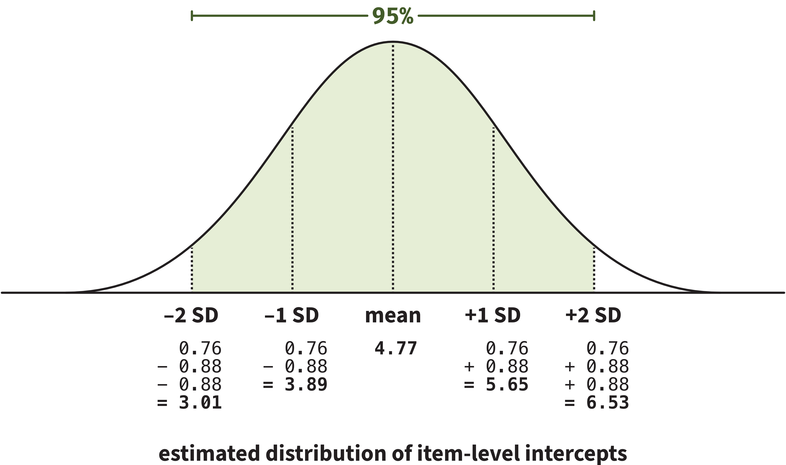
95% of item-level intercepts are estimated to fall between about 3.01 log units and 6.53 log units.
For 95% of items, the estimated log RT when the item is seen as part of an unassociated pairing is between 3.01 log units and 6.53 log units.
This range for items is larger than the range for participants, which means that items show more variability around the fixed intercept than participants do.
Slopes
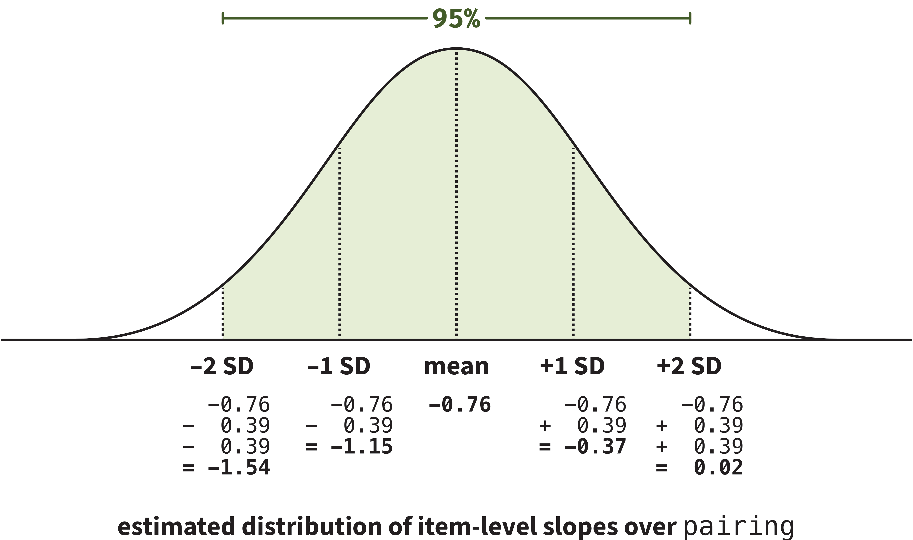
95% of item-level slopes over
pairingare estimated to fall between about –1.54 log units and 0.02 log units.This is interesting because some items appear to show a tiny positive effect of
pairing! In other words, they might elicit faster reactions for unassociated pairings and slower reactions for associated pairings—not the pattern we expected.Useful information!!